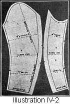
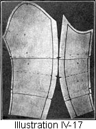
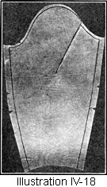

1917—American Dressmaking Step by Step
by Mme. Lydia Trattles Coates
Chapter 4—Patterns
9—Selection of Patterns
All patterns of garments covering the bust should be purchased by bust measure. If the bust measure of the pattern comes in alternate even sizes, 36, 38, 40, etc., and one is a between size, as 35, 37, 39, it is usually better to choose the larger size pattern, unless the bust is very large in proportion to all of the other measurements which are covered by the pattern. (See waist pattern alterations, Lessons 19, 20, and 23.)
When purchasing coat or jacket patterns buy them according to bust size, not several sizes larger. Should one take size 36 in a tight-fitted garment, the loose-fitting garment should be size 36 also, as the pattern-makers have allowed for the extra fulness and extra size required for loose or full garments.
Skirt patterns should be purchased by hip measure.
In choosing a pattern one should consider:
- Its suitability for the purpose of the garment.
- Texture of the material. A pattern suitable for serge may not look well made up in chiffon cloth and vice versa.
- The design of the material. A pattern with many gores should not be chosen for plaids or materials with a design. Neither should a circular skirt pattern be chosen for decided diagonal materials (Lesson 3.)
- The width of the material. A garment which will cut without piecing from 52-inch material may come out badly when made from 36-inch material. The pattern states the widths of material on which that pattern can best be used.
- The effect of the lines of the pattern in relation to the lines of the body of the wearer. The following suggestions will prove helpful:
The Straight Line
Straight lengthwise lines increase the appearance of height. Straight crosswise lines increase the appearance of width.
Angles
The effect of an angle depends upon the degree of the angle. Its general effects are more moderate than a straight line or a curve. This is why the two- and three-piece skirts are usually so satisfactory.
The Curved Line
A curve tends to increase the width effect and shorten the height effect.
To Modify the Effects of a Line
Unbroken lines give the appearance of height and width. By breaking a continuous lengthwise line with a yoke, ruffles, or draping, the general appearance of the wearer is shortened. By breaking the lines going around the body with seams, a semi-yoke, or plaits, the appearance of the width of the body is decreased. On this account the skirt with many gores is particularly becoming to the stout figure.
The High Waist-line
Most figures look better with at least a slightly raised waist-line. However, a woman who is stout and short-waisted should not choose a high waist-line and should always select a pattern whose lines emphasize her height.
The Outside Belt
The wider the belt the larger the appearance of the waist, and the narrower the belt the smaller the appearance of the waist. If a wide belt is desired by a woman with a large waist, it is usually best to break the line going around the waist by straps or buttons, or in some manner in vogue from time to time. If the broken line is not desired, the shape of the belt should be more pointed toward the center-front and back.
The Girdle
If a girdle is worn, the shape of the girdle as well as the width, as above explained, will determine its effect. A rounding girdle will increase the appearance of size, while a pointed girdle decreases the appearance of size.
The Yoke
A pointed yoke will not cut off the height to any great extent, and is very becoming to the large woman. It should, however, be avoided by the small woman, as it tends to decrease the general appearance of size. The round yoke will shorten the appearance of the wearer.
Drapery
The line and position of the drapery determine its effect. The long, sweeping, close-fitting folds and drapery tend to give the appearance of height and reduce the appearance of width, while the hip drapery or puffs decrease the appearance of height and increase the appearance of width.
Plaits
A few plaits always break the line of a garment and tend to increase the appearance of height and decrease the appearance of width. Many plaits in succession, however, increase the appearance of width as well as height.
The Tunic
The tunic is becoming to the average woman, if she chooses such lines as her figure demands. A study of the effects of lines will clearly indicate the style of tunic which should be worn.
Ruffles
Ruffles going around the garment decrease the appearance of the height and increase the appearance of width.
Panels
The panel and gored skirt is the friend of the large woman. However, a broad panel is not so becoming to very large figures, who should choose a reasonably narrow one to give the best effect.
Trimming-bands
Trimming-bands around the skirt decrease the appearance of height and increase the appearance of width if they are carried entirely around the garment. If the bands are broken at intervals, the appearance of width is modified.
Lesson 10—Study of the Pattern
- Identify every portion and write the name and number of the pattern on each part of same, as it saves any possible confusion.
- If the pattern is wrinkled, iron each piece. Any part not required put back into its envelop or lay it aside.
- Study each mark and perforation until thoroughly familiar with its purpose.
- The following suggestions will give an idea of the main points for which to look:
- Seam Margins are found by a line of perforations, or by notches, or the width of the seam is stated on the pattern.
If a seam is desired and no margin has been left, always cut far enough outside of the edge of the pattern to make provision for seam joinings. For instance, if a portion of the pattern is shown to be cut on a fold of the material and the material is not wide enough, a seam must be allowed. (Illustration II-10, Lesson 3.)
If a seam margin has been left on the centers of a pattern and no seam is desired, fold back the seam margin before laying on to the material. - Hems and Facings. If directed to either hem or face the garment decide which is preferred. If facing is desired, no other provision other than the correct length and 3/8 of an inch for the seam joining of the facing is necessary.
If a hem is desired and the pattern does not allow for same, make the hem allowance on the material, not on the pattern.
When the pattern states the garment is to be faced, do not attempt to hem it, as the pattern probably has been drafted on lines which will not turn well for a hem. - Cutting and Trimming Lines. Study the cutting and trimming perforations and then cut exactly on the line which the instructions have given.
- Seam Margins are found by a line of perforations, or by notches, or the width of the seam is stated on the pattern.
Lesson 11—Pattern Measurements
The commercial paper pattern is constructed according to model measurements. Unless the persons using the patterns are perfect models, they should change the patterns to their own proportions, lines, measurements, and individual requirements. In order to do this, not only must the body measurements be ascertained as in Chapter III, but the measurements of the model patterns as well.
In studying body measurements (Chapter III) one learns that the distance between certain points of the body constitutes a given line. There are corresponding points on the pattern constituting the same lines measured on the body.
Lesson 12—To Prepare the Pattern to be Measured
- Identify every portion of the pattern as taught in Lesson 10, and mark all margins and seam outlets. Measure only between the marked margins and marked seam outlets.
- Place the pattern flat on the table matching all notches. (Illustrations IV-1, 2, and 3.)
- Mark and measure the lines of the pattern, proceeding in the following manner:
Lesson 13—Waist Measurements
To Mark the Bust-line (Illustration IV-1)
- Begin at the tip of the bust on the side line. The tip of the bust is located at the top of the front dart, or, if there are no darts, it is found at the most curved portion of the side-front line (A). Mark straight across the center-front portion of the pattern to the center-front line.
- Carry this line from the tip of the bust to the shoulder-blade line. The shoulder-blade line passes through the rounding curve of the side back line.
- Carry the shoulder-blade line straight across the center-back portion to the center-back line.
This makes the dividing line of the entire pattern.
The Bust Measure
Bust lines are not measured. The pattern-makers' word must be accepted that the pattern has been drafted for the size bust that has been marked for it. There are, however, but few garments which have exactly the same bust measure as the wearer, as an allowance for ease and fulness is usually made on the pattern for the garment.
To Mark the Waist-line
The pattern is either notched or has perforations at the waist-line, or it may mark the waist-line at no point except under the arm. If the garment comes into a belt at the waist-line, often only 3/8 of an inch margin is allowed below the waist-line.
Waist-line Measure
The pattern-makers usually state the waist measure of their patterns. If not stated, deduct ten inches from the bust measure stated on the pattern and this is approximately the waist measure. All pattern-makers will give either exact or approximate measures of bust, waist, and hips.
To Mark the Shoulder-line
Mark the back shoulder seam from neck outlet to arm-scye outlet.
Shoulder Measurement
Measure the marked shoulder seam from outlet to outlet.
To Mark the Chest-line
Keep the center-fronts straight. Mark a straight line across the pattern midway between the front shoulder seam and the curve leading to the underarm.
Chest Measurement
Measure the chestline from center-fronts to arm-scye outlets.
To Mark the Across Back Line
Carry a straight line across the pattern, midway between the back shoulder seam and the curve leading to the underarm.
Across Back Measurement
Measure from the center-back to the margin of the arm-scyes.
Center-front Measurements
- Measure from the margin of the neck-line down the center-front of the pattern to the waist-line.
- Note the division at the bustline The upper measurement constitutes the Neck to Bustline Measurement (B). The lower measurement is the Bustline to Waist-line Measurement (C).
Center-back Measurements
- Measure from the neck margin down the center-back of the pattern to the waist-line.
- Note the division at the shoulder-blade line. The upper measurement constitutes the Neck to Shoulder-blade Line Measurement (D). The lower measurement is the Shoulder-blade Line to Waist-line Measurement (E).
Side-front Measurements
- Measure from the center of the shoulder seam, bringing the tape measure downward over the side line to the tip of the bust and to the waist-line.
- Note the division at the tip of the bust. The upper measurement constitutes the Shoulder to Tip of Bust Measurement (F). The lower measurement is the Tip of Bust to Waist-line Measurement (G).
Side-back Measurement
- Measure from the center of the shoulder-line, bringing the tape measure downward over the side-line to the waist-line.
- Note the division at the shoulder-blade line. The upper measurement constitutes the Shoulder to Shoulder-blade Line (H), and the lower measurement is the Shoulder-blade Line to Waist-line (side measurement) (I).
The Underarm Measurement
Measure the underarm seam from the arm-scye margin to the waist-line (J).
The Front Arm-scye Measurement
Measure just inside the outlet from the front shoulder seam to the underarm seam.
The Back Arm-scye Measurement
Measure just inside the outlet from the back shoulder seam to the underarm seam.
Lesson 14—Sleeve Measurements (Illustration IV-2)
- Measure both the upper and lower portions between the seam margins at the elbow-line.
- Measure 4 inches above the elbow.
- Measure 4 inches below the elbow.
- Measure 1 inch below the top of the underarm seam.
- Measure at the wrist-line.
- Measure from the top of the sleeve to the elbow.
- Measure from the elbow to the wrist, following the back line of
- Measure the front seam of the sleeve from the top if the seam to the elbow.
- Measure the front seam of the sleeve from elbow to wrist.
Lesson 15—The Collar Measurements (Illustration IV-3)
- Measure the lower collar-line on the outlet seam from center-front to center-back, marking the division at the side line.
- Measure the upper collar-line on the outlet seam from center-front to center-back marking the division at the side line.
- Measure the height of the collar at the center-front, the side, and the center-back. Measure only between the upper and lower seam outlets.
For the flat or roll collar, the neck line only is measured.
Lesson 16—Skirt Measurements
A skirt pattern is not measured but its proportions are found in the following manner:
- The Hip Measure is stated on the pattern.
- The Waist Measure is stated on the pattern.
- The Front Measure is stated on the pattern.
- The Side Measurement on the average pattern is usually found by adding one inch to the given front measure. A half-inch more is added to extra large and a half-inch less to extra small sites.
- The Back Measurement unless stated on the pattern is found by following the same directions as given for finding side measurement.
- Waist to Hip Length is stated on the pattern.
Lesson 17—Table of Approximate Sizes of Proportionate Measurements of Patterns
LADLES' MEASUREMENTS
Skirt Measurements |
||||||||||
| Waist | 22 | 24 | 26 | 28 | 30 | 32 | 34 | 36 | 38 | 40 |
| Hips | 36 | 38 | 40 | 42 | 44 | 46 1/2 | 49 | 51 1/2 | 54 1/2 | 57 1/2 |
| Waist to Hips | 6 1/2 | 6 1/2 | 6 1/2 | 6 1/2 | 6 1/2 | 6 1/2 | 6 1/2 | 6 1/2 | 6 1/2 | 6 1/2 |
| Center-front | 39 | 39 | 39 | 39 | 39 | 39 | 39 | 39 | 39 | 39 |
| Center-back | 40 | 40 | 40 | 40 | 40 | 40 | 40 1/2 | 40 1/2 | 41 | 41 |
| Sides | 39 1/2 | 39 1/2 | 39 1/2 | 40 | 40 | 40 | 40 1/2 | 40 1/2 | 41 | 41 |
Waist Measurements |
||||||||||
| Bust | 32 | 34 | 36 | 38 | 40 | 42 | 44 | 46 | 48 | 50 |
| Waist | 22 | 24 | 26 | 28 | 30 | 32 | 34 | 36 | 38 | 40 |
| Shoulder | 5 1/4 | 5 3/8 | 5 1/2 | 5 5/8 | 5 3/4 | 5 7/8 | 6 | 6 1/8 | 6 1/4 | 6 3/8 |
| Chest | 13 | 13 1/2 | 14 | 14 1/2 | 15 | 15 1/2 | 16 | 16 1/2 | 17 | 17 1/2 |
| Across Back | 12 1/2 | 13 | 13 1/2 | 14 | 14 1/2 | 15 | 15 1/2 | 16 | 16 1/2 | 17 |
Center Front |
||||||||||
| Neck to Bustline | 9 1/4 | 9 3/8 | 9 1/2 | 9 5/8 | 9 3/4 | 9 7/8 | 10 | 10 1/8 | 10 1/4 | 10 3/8 |
| Bustline to Waist | 6 1/4 | 6 3/8 | 6 1/2 | 6 5/8 | 6 3/4 | 6 7/8 | 7 | 7 1/8 | 7 1/4 | 7 3/8 |
Center-back |
||||||||||
| Neck to Shoulder-blade Line | 7 3/4 | 7 7/8 | 8 | 8 | 8 | 8 1/8 | 8 1/8 | 8 1/4 | 8 3/8 | 8 3/8 |
| Shoulder-blade Line to Waist-line (Center) | 7 1/4 | 7 3/8 | 7 1/2 | 7 1/2 | 7 1/2 | 7 1/2 | 7 5/8 | 7 5/8 | 7 5/8 | 7 5/8 |
Side-front |
||||||||||
| Shoulder to Tip of Bust | 11 3/4 | 11 7/8 | 12 | 12 1/8 | 12 1/4 | 12 3/8 | 12 1/2 | 12 5/8 | 12 3/4 | 12 7/8 |
Side-back |
||||||||||
| Shoulder to Shoulder-blade Line | 7 1/4 | 7 3/8 | 7 1/2 | 7 1/2 | 7 5/8 | 7 5/8 | 7 3/4 | 7 3/4 | 7 7/8 | 7 7/8 |
| Shoulder-blade Line to Waist (Side) | 7 1/4 | 7 3/8 | 7 1/2 | 7 1/2 | 7 1/2 | 7 1/2 | 7 5/8 | 7 5/8 | 7 5/8 | 7 5/8 |
| Underarm | 8 1/2 | 8 1/2 | 8 1/2 | 8 1/2 | 8 3/8 | 8 3/8 | 8 1/4 | 8 1/4 | 8 1/8 | 8 1/8 |
| Arm-scye, (Front) | 8 1/4 | 8 1/2 | 8 3/4 | 9 | 9 1/4 | 9 1/2 | 9 3/4 | 10 | 10 1/4 | 10 1/2 |
| Arm-scye, (Back) | 6 3/4 | 7 | 7 1/4 | 7 1/2 | 7 3/4 | 8 | 8 1/4 | 8 1/2 | 8 3/4 | 9 |
| Around Arm at Elbow | 10 1/8 | 10 5/8 | 11 | 11 3/8 | 11 3/4 | 12 1/8 | 12 1/2 | 12 7/8 | 13 1/4 | 13 1/2 |
Lengthwise |
||||||||||
| Shoulder to Elbow | 14 3/4 | 14 7/8 | 15 | 15 1/8 | 15 1/4 | 15 3/8 | 15 1/2 | 15 5/8 | 15 3/4 | 15 7/8 |
| Elbow to Wrist | 10 1/2 | 10 1/2 | 10 1/2 | 10 5/8 | 10 5/8 | 10 3/4 | 10 3/4 | 10 7/8 | 10 7/8 | 11 |
| Neck Size | 12 | 12 1/2 | 13 | 13 1/2 | 14 | 14 1/2 | 15 | 15 1/2 | 16 | 16 1/2 |
MISSES' MEASUREMENTS
| Age | 14 | 16 | 18 | 20 |
| Bust | 32 | 34 | 35 1/2 | 37 |
| Shoulder | 5 1/8 | 5 1/4 | 5 3/8 | 5 1/2 |
| Chest | 12 3/4 | 13 1/4 | 13 3/4 | 14 1/4 |
| Across Back | 12 1/2 | 13 | 13 1/2 | 14 |
| Center-front | 14 1/2 | 15 | 15 1/2 | 16 |
| Center-back | 14 | 14 1/2 | 15 | 15 1/2 |
| Side-front | 16 1/2 | 17 | 17 1/2 | 18 |
| Side-back | 15 | 15 1/2 | 16 | 16 1/2 |
| Underarm | 7 3/4 | 8 | 8 1/4 | 8 1/2 |
| Arm-scye, (Front) | 7 1/4 | 7 1/2 | 7 3/4 | 8 |
| Arm-scye, (Back) | 6 3/4 | 7 | 7 1/4 | 7 1/2 |
| Elbow | 10 5/8 | 11 | 11 3/8 | 11 3/4 |
| Lengthwise, Shoulder to Elbow | 13 3/4 | 14 | 14 1/4 | 14 1/2 |
| Lengthwise, Elbow to Wrist | 9 3/4 | 10 | 10 1/4 | 10 1/2 |
| Lengthwise, Inside Measurement | 18 | 18 1/2 | 19 | 19 1/2 |
| Neck Size | 12 | 12 1/2 | 12 3/4 | 13 |
| Hips | 34 1/2 | 36 1/2 | 37 1/2 | 38 1/2 |
| Waist | 25 | 24 1/2 | 24 1/2 | 25 |
| Center-front | 32 1/2 | 35 | 37 | 38 |
| Center-back | 33 1/2 | 36 | 38 | 39 |
| Sides | 33 | 35 1/2 | 37 1/2 | 38 1/2 |
| Waist to Hips | 6 | 6 | 6 | 6 |
GIRLS', JUNIORS', AND CHILDREN'S MEASUREMENTS
Skirt Measurements |
||||||||
| Age | 2 | 4 | 6 | 8 | 10 | 12 | 14 | 16 |
| Breast | 21 1/2 | 23 | 24 1/2 | 26 | 27 1/2 | 29 | 30 1/2 | 32 |
| Shoulder | 3 1/4 | 3 1/2 | 3 3/4 | 4 | 4 1/4 | 4 1/2 | 4 3/4 | 5 |
| Chest | 9 7/8 | 10 3/8 | 10 7/8 | 11 3/8 | 11 7/8 | 12 3/8 | 12 7/8 | 13 3/8 |
| Across Back | 9 1/2 | 10 | 10 1/2 | 11 | 11 1/2 | 12 | 12 1/2 | 13 |
| Center-front | 10 | 10 1/2 | 11 | 11 1/2 | 12 1/4 | 13 | 13 3/4 | 14 1/2 |
| Center-back | 10 1/2 | 11 | 11 1/2 | 12 | 12 3/4 | 13 1/2 | 14 1/4 | 15 |
| Side-front | 10 1/2 | 12 | 12 1/2 | 13 | 13 3/4 | 14 1/2 | 15 1/4 | 16 |
| Side-back | 11 | 11 1/2 | 12 | 12 1/2 | 13 1/4 | 14 | 14 3/4 | 15 1/2 |
| Underarm | 5 3/4 | 6 | 6 1/4 | 6 1/2 | 7 | 7 1/2 | 8 | 8 1/2 |
| Arm-scye, (Front) | 6 1/4 | 6 1/2 | 6 3/4 | 7 | 7 1/4 | 7 1/2 | 7 3/4 | 8 |
| Arm-scye, (Back) | 5 1/4 | 5 1/2 | 5 3/4 | 6 | 6 1/4 | 6 1/2 | 6 3/4 | 7 |
| Length—Shoulder to Elbow | 7 1/2 | 8 | 8 1/2 | 9 | 9 1/2 | 10 | 10 1/2 | 11 |
| Length—Elbow to Wrist | 6 | 6 1/2 | 7 | 7 1/2 | 8 | 8 1/2 | 9 | 9 1/2 |
| Neck Size | 11 | 11 1/4 | 11 1/2 | 11 3/4 | 12 | 12 1/4 | 12 1/2 | 12 3/4 |
| Waist | 21 | 22 1/4 | 23 1/4 | 25 | 26 | 27 | 28 | 29 |
| Center-front | 11 3/4 | 13 1/2 | 15 1/4 | 17 | 20 | 23 | 26 | 30 |
| Center-back | 12 1/4 | 14 | 15 3/4 | 17 1/2 | 20 1/2 | 23 1/2 | 26 1/2 | 30 1/2 |
| Sides | 12 1/4 | 14 | 15 3/4 | 17 1/2 | 20 1/2 | 23 1/2 | 26 1/2 | 30 1/2 |
Lesson 18—Specifications for Fitting
To Figure the Specifications for Fitting Patterns
- Obtain the body measurements (Chapter III).
- Obtain the pattern measurements (Lessons 11 to 17).
- The difference between the measurements of the body and the size of the pattern constitutes the specifications of the amount to be fitted. In figuring the lengths of loose waists an extra allowance has usually been made by the pattern-makers for blouse. Below is given the form usually used in obtaining the Specifications for Fitting.
| Body Measurements | Pattern Measurements | Specifications for Fitting | |
Waist |
|||
| Bust | 36 | 36 | 0 |
| Waist | 28 | 26 | +2 |
| Shoulder | 6 1/2 | 5 1/2 | +1 |
| Chest | 14 | 14 | 0 |
| Across Back | 13 1/2 | 13 1/2 | 0 |
Center-front |
|||
| Neck to Bustline | 10 1/2 | 9 1/2 | +1 |
| Bustline to Waist-line | 7 1/2 | 6 1/2 | +1 |
Side-front |
|||
| Shoulder to Tip of Bust | 13 | 12 | +1 |
| Tip of Bust to Waist-line | 7 | 6 1/4 | +3/4 |
Side-back |
|||
| Shoulder to Shoulder-Blade Line | 8 1/4 | 7 1/2 | +3/4 |
| Shoulderblade Line to Waist-line | 7 1/2 | 7 1/2 | 0 |
| Underarm | 9 | 8 1/2 | +1/2 |
Arm-scye |
|||
| (Front) | 9 3/4 | 8 3/4 | +1 |
| (Back) | 8 | 7 1/4 | +3/4 |
The entire method is simply a process of adding or subtracting the difference between the body and pattern measurements.
Sleeves and collars are figured in exactly the same manner.
Skirt alterations are figured from the desired length instead of the floor length. For instance: should one measure 44 inches to the floor for the front measure and wish the skirt to hang 7 inches from the floor, a skirt 37 inches in length is figured. If the pattern is drafted 41 inches finished length, a 4-inch alteration is required.
Below is given a form by which to figure necessary alterations for skirts:
| Model's Measurements | Length from Floor | Length Desired | Pattern Measurements | Specifications for Fitting | |
| Hips | 44 | 41 | +3 | ||
| Waist | 28 | 29 | -1 | ||
| Waist-line to Hips | 6 1/2 | 6 1/2 | 0 | ||
| Front | 44 | -7 | 37 | 41 | -4 |
| Back | 45 | -7 | 38 | 42 | -4 |
| Sides | 45 | -7 | 28 | 42 | -4 |
Lesson 19—Pattern Alterations
The pattern should always be fitted to the figure before the garment is cut out. This means economy of time, labor, and materials. One is then also assured a perfect fitting garment before the material has been cut into.
- Study carefully the list of measurements to be obtained. Learn just what constitutes each of the specific lines on the body, where to find, and how to measure over each of them. This is fully covered in Chapter III.
- Measure these same lines on the pattern (Lesson 12) or refer to the table of Pattern Measurements (Lesson 17).
- Obtain the specifications for any alterations to be made (Lesson 18).
- The following lesson teaches how and where to make necessary alterations on the pattern.
Lesson 20—To Alter Patterns for Fitted Garments (such as linings, waists, tailored coats, princess slips, brassieres, etc.)
When the Pattern Is Too Large or Too Small (Illustration IV-4)
The alteration for bust size is made only on the side-front, side-back, and shoulder-lines of the pattern.
- Learn the exact amount of alteration required to enlarge or reduce the bust measure of the pattern to fit the figure.
 Divide the number of inches of the alteration by the number of edges to be altered. This will give the correct proportion of extension or reduction to make on each edge of the seams. For instance: should one wish to enlarge or reduce the bust measure two inches on the pattern, extend or fold back the edges of each side-front, side-back, and shoulder line 1/4 inch. (Illustration IV-4.)
Divide the number of inches of the alteration by the number of edges to be altered. This will give the correct proportion of extension or reduction to make on each edge of the seams. For instance: should one wish to enlarge or reduce the bust measure two inches on the pattern, extend or fold back the edges of each side-front, side-back, and shoulder line 1/4 inch. (Illustration IV-4.)

The amount of extension or reduction is made a uniform amount the entire length of the side-front, side-back, and shoulder-lines.
This bust size is always adjusted before any other portion of the pattern is measured.
If the Waist-Line Is Too Large or Too Small
Start at the waistline and extend or fold back the pattern on the underarm seams one-fourth of the amount necessary to enlarge or reduce the waistline, graduating the alteration to the bustline (Illustration IV-4.)
If the Pattern Is Too Wide or Too Narrow on the Shoulder and Is Just Right Across the Chest
The shoulder seam will be lengthened or shortened at the arm-scye. (Illustration IV-4.)
If the Pattern Is Too Wide or Too Narrow on Both Shoulder and Chest
The alteration is made by extending or folding the pattern from the shoulder to the tip of the bustline Do not alter the front shoulder-line only, as the back shoulder-line must be altered a corresponding amount, although the chestline and the across back lines are altered independently of each other.
If the Pattern Is Too Wide or Too Narrow on the Across Back Line and the Shoulders
Alter on the side-back lines from shoulder to shoulderblade line by extending or folding back the pattern.
If the Pattern Is Too Long or Too Short from Neck to Bustline
Fold back or extend the pattern the correct amount at the chestline (Illustration IV-5), graduating the alteration to the side-front line.
If the Pattern Is Too Long or Too Short from Shoulder to Tip of Bust
Fold back or extend the pattern the necessary amount on the chestline, graduating the alteration to the center-front and to the arm-scye.
If the Front Arm-scye Is Too Large or Too Small
Fold back or extend the pattern on the chestline, graduating the alteration to the side-front line.
If the Pattern Is Too Long or Too Short from Neck to Shoulderblade Line
Extend or shorten the pattern on the Across Back Line (Illustration IV-5), graduating the alteration to the side-back line.
If the Pattern Is Too Long or Too Short from Shoulder to Shoulderblade Line
Shorten or extend the pattern on the Across Back Line, graduating the alteration to the back arm-scye and to the center-back line.
If the Pattern Is Too Large or Too Small in the Back Arm-scye
Enlarge or reduce on the Across Back Line by folding back or extending the pattern the necessary amount, and graduate the alteration to the side-back line.
If the Pattern Is Too Long or Too Short-waisted from Bustline to Waistline, or from Tip of Bust to Waistline, or from Shoulderblade Line to Waistline, or Under the Arm, or for Any Lengthwise Alteration Below the Bust and Shoulderblade Line
The pattern is lengthened or shortened 1 1/2 inch above the natural waistline, being careful that every alteration is graduated to the next alteration point, keeping each measurement perfect. Only the exact amount necessary is taken from or added to each line. For instance, if the center-back line measures the correct amount, no reduction or addition is made to the length of that line. If the underarm seam line needs 1/2 inch more length and center-front line needs 1 1/2 inch more length, add those quantities to their respective lines without altering the center-back line. (Illustration IV-5.)
Lesson 21—To Alter for Round Shoulders or Protruding Shoulder-Blades
This alteration is made on the shoulderblade line at the side-back line of the pattern. Graduate the alteration to the center-back line and to the underarm seam. (Illustration IV-6.)
Lesson 22—For Very Straight Shoulders or Receding Shoulder-Blades
Alter on the same lines as for round shoulders, reducing instead of increasing the length.
Lesson 23—Loose Waist Alterations
Loose Waists are altered the same as fitted waists. When it has no side seams upon which to alter, slash the pattern from the center of the shoulder to the waistline and spread or fold the pattern according to instructions given in Lesson 20. However, it must be kept in mind that these alterations are for the correct proportions only and should not be brought down to the actual measurements of the body. For instance, a 36 bust size may measure 46 inches around the bust because of 10 extra inches allowed for fulness and ease. If the woman for whom the garment is made measures a 36-inch bust, the pattern requires no alteration.
Lesson 24—Alteration of Sleeve Pattern
Sleeves should not be cut out until the body portion of the garment has been fitted, and the seams finished. The reason is very obvious.
Suppose the shoulder seam of a garment is taken up a certain amount; unless a corresponding amount is taken out of the sleeve, the sleeve will be too full at the top. Again, suppose the garment was lengthened on the chestline and the sleeve is plain. If no corresponding alteration is made on the front of it, this sleeve will not be large enough to reach from the shoulder seam to the correct place under the arm, and a good fit could not be expected. Therefore, every alteration made in arm-scye, shoulder, or underarm seams of the garment or pattern must have a corresponding alteration in the same place, the same manner, and the same amount on the pattern of the sleeve.
Sleeves must be fitted the exact length desired, and so that they fit at the arm-scye, elbow, four inches above the elbow, four inches below the elbow, and at the wrist. Should the sleeves be closed at the wrist, the bottom of the sleeves is fitted according to the hand measurement. If the sleeves are open at the wrist with a placket, cuff, or fulness, to allow the hand to pass through, then the wrist measurement is used.
ALTERATION FOR ARM-SCYE OF SLEEVE PATTERN
In altering the arm-scye of the garment there are four different lines on which to alter, viz.:
- Shoulder alteration, made on the shoulder seam.
- Underarm alteration, made on the underarm seams.
- Front arm-scye alteration, made on the chestline
- Back arm-scye alteration, made on the across back line.
The corresponding places are to be altered on the sleeves a corresponding amount and in exactly the same manner. By altering according to this method it is found that no matter how many alterations are made in the arm-scye of the garment, or on the pattern of the garment, one is able to match the top of the sleeves at the correct place and bring the underarm seam to the right line, and keep the amount of fulness in the sleeve which it is intended to have.
If the Shoulder Seam Has Been Altered (Illustrations IV-7 and 8)
Slash the sleeve pattern at the top of the sleeve and alter the same amount added or taken from the shoulder seam, graduating the alteration to four inches above the elbow. When a slash has been made in the pattern the alteration should continue until the pattern lies flat or else allowance made for the curve of the pattern.
If the Front Arm-scye of the Garment Has Been Altered (Illustrations IV-9 and 10)
Make a corresponding alteration on the top portion of the sleeve four inches to the front of the underarm seam, graduating the alteration toward the center of the sleeve to about four inches above the elbow.
If  the Back Arm-scye Has Been Altered (Illustrations IV-11 and 12)
the Back Arm-scye Has Been Altered (Illustrations IV-11 and 12)

Make a corresponding alteration on the back seam of the sleeve, graduating the alteration to 4 inches above the elbow.
If the Underarm Seam Has Been Altered (Illustrations IV-13 and 14)
Make a corresponding alteration on the front seam of the sleeve graduating the alteration to 4 inches above the elbow.
TO ALTER THE WIDTH OF THE SLEEVE (Illustration IV-15)
- If the sleeve pattern is too narrow at the elbow, 4 inches above the elbow, 4 inches below the elbow, 4 inches below the shoulder, or at the wrist, extend the pattern the necessary amount on the seams, graduating the extension to the next division line of the sleeve.
- If the pattern is too wide at any of these lines around the sleeve, fold back the pattern on the seams the necessary amount, graduating the alteration to the amount required for the measurement of the next line of the sleeve.
ALTERING SLEEVE LENGTHS (Illustrations IV-16 and 17)
To Lengthen or Shorten the Sleeve From Shoulder to Elbow
Match all notches of the sleeve and fold or extend the pattern 4 inches above the elbow.
To Lengthen or Shorten the Sleeve From Elbow to Wrist
Match all notches of the sleeves. Slash the pattern 4 inches below the elbow and extend or fold the pattern to give the required length.
Lesson 25—To Alter the One-Piece Sleeve (Illustrations IV-18 and 19)
The one-piece sleeve is altered the same as the two-piece sleeve (Lesson 24), except that, since it has no back seam, the alterations ordinarily falling on this seam are made by slashing the pattern toward the center of the sleeve, starting about 4 inches from the underarm of the pattern.
Lesson 26—To Alter Kimono and Raglan Sleeves
The Kimono and Raglan Sleeves have no arm-scye although sometimes they have a shoulder seam. Therefore, none of the alterations given in Lesson 24, other than the shoulder alteration, are required for the top portion of the sleeve.
The width and length alterations are made the same as on all other sleeves.
Lesson 27—Special Sleeve Alterations
To Alter for Fleshy Muscle of the Arm
Many women find that sleeves fit perfectly in the arm-scye, but are altogether too small through the muscle of the arm.
First of all, consider where the fleshy part of the arm seems to be, whether it comes to the front of the arm or the back, or whether the flesh seems to be evenly distributed.
- If the flesh of the arm seems evenly distributed (Illustration IV-20), start the alteration with nothing at the top of the seams of the sleeves, carrying the alteration downward, graduating to one-fourth of the amount necessary as the alteration reaches the line 4 inches below the shoulder. Make this adjustment on both the front and back seams.
- If the flesh of the arm seems to be mostly at the front of the arm, then make the entire alteration only on the front portion of the sleeve, leaving the back portion as it is.
- If the flesh of the arm seems to be mostly on the back part of the arm, alter only on the back seam of the sleeves, altering an equal amount on both the upper portion and the under portion of the sleeve seams.
To Alter for a Fleshy Forearm
Alter practically the same as for a fleshy muscle.
- Alter the sleeve on both the upper and lower portions of the front and back seams if the flesh is evenly distributed.
- Alter only on the front seams if the flesh seems to be to the front.
- Alter on the back seams if the flesh seems to be to the back of the forearm.
To alter for thin muscles, or a thin forearm, reduce the amount in the same places as enlarged for the fleshy muscle or fleshy forearm.
Lesson 28—To Alter Cuff Patterns
Cuff alterations are made to correspond to the alterations which are made at the bottom of the sleeves. If the seams at the bottom of the sleeves have been taken in or let out, the cuff pattern should be taken in or let out the same amount and on the same lines, unless it interferes with a point of the cuff. In the latter instance the alteration is made at each side of the points of the cuff.
Lesson 29—Alteration of Collar Patterns
Collar alterations are studied in two classes. The High, Close-fitting Collar, and the Roll, Flare or Flat Collar. To have the collar fit one's neck is more or less of an individual problem, for unless it is fitted according to the individual requirements there is usually some trouble in wearing it.
To Alter a High Collar Pattern
- If a collar is too large or too small, divide the amount of the alteration in half. Set in a piece to enlarge, or lay in a fold to reduce at the center-front and on each end of the collar. This keeps the collar in perfect shape. (Illustrations IV-21 and 22.)
- If the collar is too large or too small from center-front to side line and just right from the side line to the center-back, make all alterations on the center-front of the collar, making none on the ends of the collar. (Illustrations IV-23 and 24.)
- If the collar is just right from the center-front to side line, and too large or too small from side line to center-back, make the alteration only at the ends of the collar, and none in the center-front. (Illustrations IV-25 and26.)
- If the collar is the right size at the lower line, but is too large or too small at the upper line, alter on the side-front and side back lines of the collar, graduating the alteration from the amount necessary to alter at the top down to nothing at the bottom. (Illustrations IV-27 and 28.)
- If a collar fits at the upper line, but is too large or too small at the lower line, reverse the process, making the alterations on the side front and side-back lines, but altering from the bottom of the collar, graduating to nothing at the top. (Illustrations IV-29 and 30.)
- If a collar is too high or too low, make the alteration to heighten or lower on a straight line through the center of the collar, never on the edges. (Illustrations IV-31 and 32.)
- If a collar is too high or too low in the back, and just the right height in front, graduate the alteration from center-back to nothing at the front. (Illustrations IV-33 and 34.)
- If the collar is right at the back and too high or too low in front, place the amount of the alteration in the center-front of the collar and graduate to nothing at the ends. (Illustrations IV-35 and 36.)
To Alter the Flat or Roll Collar (Illustrations IV-37 and 38)
The Flat or Roll Collar is a very easy portion of the garment to alter, as no alterations are made on the center-front or center-back. The only alterations necessary are the same as in the neck and shoulder of the garment, making the alterations in the corresponding place and amount.
- If an alteration is made in the neck of the garment, the same alteration should also be made in the corresponding place at the neck of the collar pattern.
- If an alteration is made in both the neck and the shoulder of the garment, corresponding alterations should be made in the neck and shoulder of the collar pattern.
- If an alteration is made in the shoulder only of the garment, a corresponding alteration is made on the outside edge of the collar, not changing the neck-line of the collar pattern.
Care must be taken not to alter through the point of a collar. If the alteration falls there, make it either to the front or the back of the point.
Lesson 30—Alteration of Skirt Patterns (Illustration IV-39)
The Straight Skirt
The Straight Skirt has straight lines from the top to the bottom, and has neither waistline nor hip-line.
The width of the skirt depends on the number of breadths used.
The straight skirt is adjusted at the waistline by tucks, gathers, shirring, plaits, cordings, or any method in vogue.
In cutting a straight skirt without a pattern it requires a greater length than simply the desired length of the finished skirt. In order to have the skirt hang evenly, the following allowances must be made:
- Allow 3/8 of an inch margin for the top of the skirt.
- Allow double the amount of a heading or ruffle if a heading or ruffle is desired.
- Allow the number of inches which the skirt is to be raised above the natural waistline.
- Allow the length of the skirt to the finished back measure, or to the longest point of the finished skirt. If one desire a 41-inch front, and 42-inch back, do not cut the skirt to the 41-inch length and have it too short in the back, but rather cut it to the 42-inch length, and turn the skirt up at the bottom to the desired length.
- Allow 1/2 of an inch for each time the garment is adjusted around the body. For instance, if there are three rows of shirrings around the body, allow 1/2 an inch for each row of shirring, making the garment 1 1/2 inch longer than the required measurement. In this way one eliminates the drawing up at the hips and back, making the skirt shorter than it was intended to be.
- If a hem is desired, allow its width.
- Allow 3/8 of an inch for the lower margin.
To Alter the Straight Skirt
Any alteration in length of the straight skirt is made at the bottom unless of bordered material, or flouncing, when the alterations must necessarily be at the top instead of at the bottom.
Altering the Piece Skirt
The Piece Skirt has only the side line on which to alter. Do not alter on the center-front or center-back lines to enlarge or reduce the pattern.
- Mark the regulation waistline The pattern-makers will state or show this plainly on their patterns. If they do not, measure the width of the belt pattern which accompanies the skirt pattern and this will give the height of the waistline.
- Measure the number of inches below the natural waistline to which the pattern-makers state they have drafted the hip measure. Mark this hip-line entirely around the pattern, as it will be the line to and from which to make the alterations on both a Piece and a Gored Skirt.
If the Hip Measure of the Pattern Is Too Small (Illustration IV-40)
Extend the pattern one-quarter of the amount of the required alteration, carrying the extension a uniform amount from the hip-line to the bottom of the skirt and graduate alteration to correct waistline
If the Hip Measure Is Too Large (Illustration IV-41)
Fold the pattern a uniform width of one-quarter of the necessary alteration, folding back from the hip-line to the bottom of the skirt and graduate the alteration to the waistline
If the Waist Measure Is Just Right and the Hips Are To Be Enlarged or Reduced (Illustrations IV-40 and 41)
Make no alteration at the waistline, but begin at the hips and fold back or extend the pattern, graduating the line to nothing as it approaches the waistline
To Enlarge the Waist Measure (Illustrations IV-42 and 43)
- Enlarge the pattern at the waistline at the side line of the skirt, extending one-fourth of the amount necessary for the entire enlargement of the waistline Enlarge on both the front (Illustration IV-42) and back lines (Illustration IV-43).
- Graduate the alteration from the top line of the skirt through the extension at the waistline to the hip-line. It is obvious that one can alter only when the side line is an angle.
To Reduce the Waist Measure (Illustrations IV-44 and 45)
- Slash the pattern and fold at the waistline, folding back one-fourth of the amount necessary to make the entire reduction. It is essential that an equal amount be taken from both the front (Illustration IV-44) and back gores (Illustration IV-45).
- Graduate the alteration from the top of the skirt to the hip-line.
To Alter a Gored Skirt Pattern (Illustrations IV-46 and 47)
A gored skirt pattern is very easy to alter and its greater number of seams makes it a desirable skirt for women whose figure requirements demand a number of alterations.
Do not alter the center-front or the center-back line of a gored skirt pattern. Do not alter on any straight line, but make the alterations only on the angles.
The rule for gored skirt alterations is as follows:
Divide the number of inches of the required alteration by the number of angles upon which to alter. Every seam has two edges, therefore there are twice the number of places as there are alteration seams.
All reductions and enlargements of the gored skirt pattern are made exactly as taught in detail in the Piece Skirt alterations.
To Fit a Circular Skirt Pattern When Both Hips and Waistline Are an Equal Amount Too Small (Illustration IV-49)
- Lay the pattern on a long straight strip of paper.
- Make a uniform extension of one-fourth of the amount to be altered, carrying the extension from top to bottom of both the center-front and center-back lines.
To Fit a Circular Skirt Pattern When the Pattern Is Too Large an Equal Amount at Both Waistline and Hips (Illustration IV-48)
Fold back the pattern one-fourth of the amount of the necessary alteration, making the fold a uniform width from top to bottom of both the center-front and center-back lines.
Dotted line on Illustration IV-48 shows where pattern is to be folded back.
To Fit a Circular Skirt Pattern When the Waist Measure Is Too Small and the Hip Measure Is Correct (Illustration IV-48)
- Slash from the top of the pattern to the hip-line on both the side-front and side-back lines. Since the pattern is usually one-half of entire skirt, these two slashes give four alteration places.
- Spread the pattern at the natural waistline at each of these alteration places one-fourth of the amount the waist size is to be increased.
- Graduate the alteration to nothing at the hip-line.
To Fit a Circular Skirt Pattern When the Waist Measure Is Too Large and the Hip Measure Is Correct (Illustration IV-49)
- Slash from the top of the pattern to the hip-line at the side-front and side-back lines.
- Lap the pattern one-fourth of the amount of the entire alteration at each slashed point at the waistline.
- Graduate the alteration to nothing at the hip-line.
- Instead of slashing and lapping the pattern, a tuck may be taken if preferred.
To Fit the Circular Skirt Pattern When the Waist Measure Is Correct and the Hip Measure Is Too Large (Illustration IV-48)
The pattern must be altered to the exact hip measure without regard to the change which it makes on the waistline
- Fold back the pattern one-fourth of the amount of the necessary alteration, making the fold a uniform amount from top to bottom of the center-front and center-back lines of the pattern. This reduces the waist size the same amount which it reduces the hips.
- Enlarge the waist to its required size by slashing from the top of the pattern to the hip-line on the side-front and side-back lines and extending the pattern on the waistline at each slash one-fourth of the amount of the entire waist alteration. Graduate the alteration to nothing at the hip-line.
The above alteration will show how necessary it is to purchase a circular skirt pattern by hip measure, for when the hip size is not correct it means a general alteration of the entire pattern.
To Fit a Circular Skirt Pattern When the Hips Are Too Small and the Waistline the Right Size (Illustration IV-49)
The first requirement of every skirt pattern is that the hips be the right size. If the hips of a circular skirt pattern are too small, first enlarge the pattern to the correct hip measure, regardless of the change which this will make on the waistline
- Lay the pattern on a long, straight strip of paper and make an extension of one-fourth of the amount to be altered, carrying the extension a uniform width from top to bottom of both the front and back lines. This naturally enlarges the waistline the same amount the hips are enlarged.
- Reduce the waist measure to the correct size by slashing from the top of the pattern to the hip-line on the side-front and side-back lines and lapping the pattern at the waistline at each slash one-fourth of the amount of the entire alteration. Graduate the alteration to nothing at the hip-line.
TO ALTER SKIRT LENGTHS
To Lengthen from Waistline to Hip
- If the pattern is too short from the natural waistline to the hips, lengthen the pattern by slashing it half-way between the regulation waistline and the hip-line, slashing the pattern straight across the entire width. Do not make the slash in a curve, or try to follow the top line of the skirt, otherwise it will be vary difficult to keep the correct lines.
- Spread the pattern the exact amount which must be added to get the correct length from waistline to hips.
- In making the alteration and inserting the extra piece, add to the outside line of the alteration, as there will be one edge a little wider than the other when the alteration is made, and the perfect lengthwise line must be maintained.
To Shorten the Pattern from the Waistline to the Hips
- Slash the pattern as advised for lengthening it.
- Lap the pattern the exact amount it is to be shortened.
To Lengthen the Skirt from the Hips to the Bottom
In lengthening the skirt, where one needs only one inch additional, lengthen it at the very bottom of the skirt. If there is over one inch to add, it should not be added at the bottom of the skirt, as it is apt to change the line.
To Lengthen or Shorten Skirt Patterns (Illustrations IV-50
IV-50 and 51)
and 51)


- Slash the pattern straight across the entire skirt four inches above the bottom of the skirt and four inches below the hip-line.
- Spread or lap the pattern one-half of the amount necessary at each of the slashes, graduating the length to any required amount.
- Even up the outside edges of the pattern, as the spreading or lapping always changes the edges of an angle and the correct lines must be retained.
If several inches are to be taken from the length of the pattern it is best to alter in a third place also, taking off one-third of the amount necessary half-way from the hips to the bottom of the skirt and one-third in each of the other alteration places. In this way the entire lower sweep of the skirt is preserved.
Tucks may be laid in the pattern for reducing the length, instead of slashing the pattern and lapping.
The dotted lines in Illustration IV-50 and 51 show how to retain the side lines of the pattern by either taking from or adding to the original pattern when the alteration has made an uneven line.
Lesson 31—Alteration for the Large Abdomen (Illustration IV-52)
Sometimes it is found when the measurement is taken, that the skirt length is from one to two or three inches shorter in front than at the back because of a large abdomen.
An alteration should then be made to allow width as well as length, so the side seams will not draw forward.
To Alter a Skirt for a Large Abdomen
- Ascertain the exact difference between the front and back measurements of the model. The back measure is ordinarily 1 inch longer than the front measure.
- For alteration purposes use a straight strip of paper about 4 inches longer than the front length of the skirt and about 6 inches wide.
- Pin the bottom edge of the center-front of the skirt onto the straight lower edge of the alteration strip at (A). Mark downward on the pattern from the natural waistline the point of the fullest part of the abdomen (B). Pin this mark back from the straight edge of the alteration strip one-half of the distance of the entire amount of the alteration. Should one be enlarging 2 inches for the abdomen, pin the pattern back 1 inch from the edge of the alteration strip at this point (B).
- Carry the alteration line upward above the top of the pattern (C) the same amount which is added to the front of the garment for the abdominal alteration.
- Graduate the line from the center-front and top of the pattern to nothing at the center-back line (D).
- Change the perforations or marks indicating the natural waistline so the pattern will preserve the original line above the natural waistline.
- After the abdominal alterations have been made, the waist and hips are then adjusted according to Lesson 30.
When one has a very large abdomen it is usually advisable in making a panel skirt to leave the panel wide enough so that it can be adjusted over the abdomen, and all seams kept in their correct line.
Lesson 32—Altering Misses', Girls', Juniors', and Children's Patterns
Misses', girls', juniors', and children's patterns are altered on exactly the same principle as ladies' patterns. Naturally, it is not necessary to secure so many measurements and the work is somewhat simplified. Instead of altering with the bustline as the dividing line, the breast-line is used.
Instead of altering the lengths from the floor for girls' and children's garments, they are altered to and from the knee.
A careful study of, and adherence to, the directions for making alterations on ladies' garments will answer every need.
Lesson 33—Altering Boys' Patterns
Boys' blouse and coat patterns are altered on the same principle as ladies' garments, using the breast-line instead of the bustline for the dividing line of the pattern.
ALTERING BOYS' PANTS PATTERNS
It is usually far better to make up a pair of pants for a boy out of an old piece of muslin or some cheap material before making up the garments. Boys' measurements differ radically, as they may be very full across the seat and flat across the abdomen, or they may be very full in the abdomen and flat across the seat. And then, a boy may be very long from waist to crotch and short from crotch to knee, or vice versa.
The age of a boy does not necessarily determine the size of the pattern which he requires. Therefore, to first make the alterations on an old piece of material will insure a much better fitting garment.
If the Waist Measurement Is Too Large or Too Small (Illustrations 54)
Add on the pattern to enlarge, or fold back the pattern to reduce, one-fourth of the entire amount of the alteration on each of the side seams, graduating the line down about four or five inches.
If the Pattern Is Too Wide or Too Narrow Across the Seat
This alteration is also made on the side lines, either extending the line on each seam one-fourth of the amount needed to enlarge, or folding the pattern back one-fourth of the amount needed to reduce.
If the Pattern Is Too Long or Too Short From the Waist to Crotch at Either the Center-front or Center-back (Illustrations IV-53 and 54)
Slash the pattern one-half the distance from the waistline to the crotch and lap the desired amount to shorten, or add to the pattern the necessary amount to lengthen.
If the Pattern Is Too Long or Too Short From Crotch to Knee (Illustrations IV-53 and 54)
Slash the pattern half-way from the crotch to the knee-line and lap the pattern to shorten, or extend the pattern the amount needed for the length.